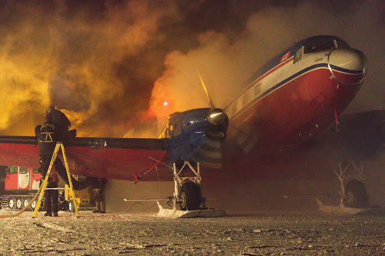
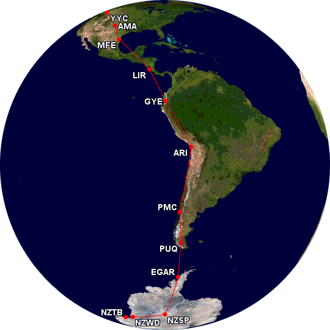
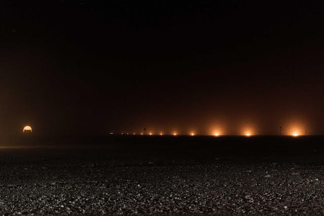
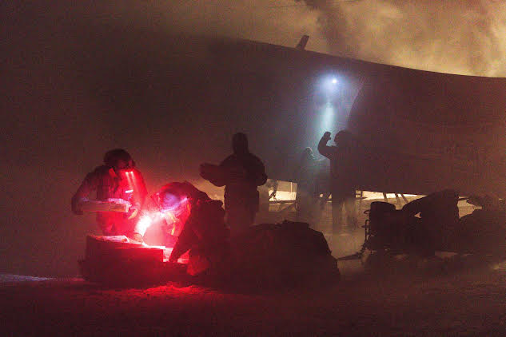
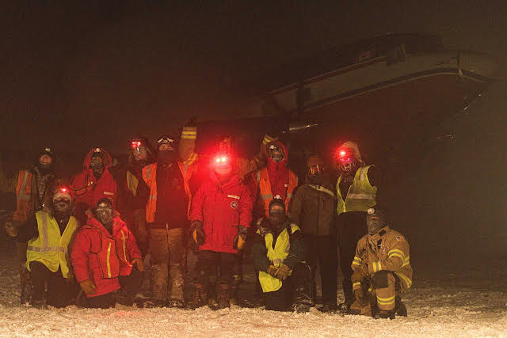
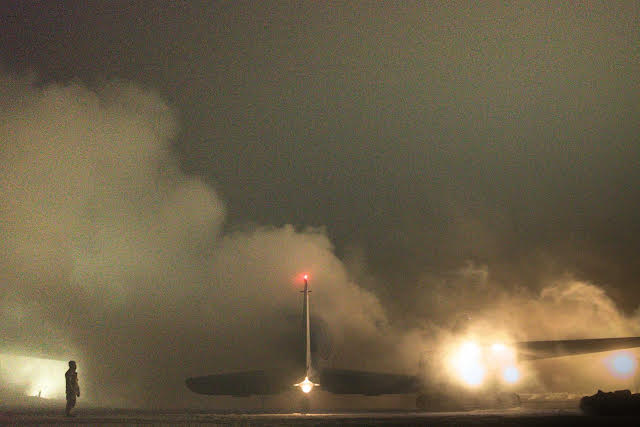

Longren Antarctic Newsletter #13 - 31.05.2026 ------------------------------ Hello friends and family, I have a special story to tell you about today. In a previous letter, I mentioned that the South Pole station won't get another plane until the end of winter, around the end of October. Turns out, I lied! We received an unexpected plane at the beginning of May.  The aircraft is refueled at the South Pole. As for the reason why, I won't get into here. If you are interested, have a look at this news article. A plane at the South Pole in the winter is especially unique. Historically, there have been only two times that a plane has been here while the Sun has been below the horizon (back in 2001 and 2016). We can add 2026 to that list! The plane was a Basler BT-67, which is a modified Douglas DC-3, first built in 1936. Production of the DC-3 finished at the end of the 1940s, making the Basler that arrived at the South Pole quite an old aircraft! Operated by Kenn Borek Air (KBA), an airline that has been operating in Antarctica since 1985, the DC-3 had a long journey from its home in Canada to its destination in Antarctica.  The aircraft's path from Calgary, Canada to Punta Arenas, Chile, before continuing to Antarctica. The South Pole wasn't the final destination for the plane. Rather, the plane stopped here to pick up some fuel before continuing with the mission. A week later, the plane returned to Pole for more fuel on its return trip back to Canada. Receiving the plane took weeks of preparation. All of the airstrip supplies had been winterized, which meant they had to be unburied. The skiway had to be groomed to remove the drifting snow that had built up since summer. Runway lights had to be prepared, to allow the pilots to see where to land. And all of that had to be done in the cold and dark winter night.  The runway lights (right), called smudge pots, were barrels of jet fuel that were lit on fire. The satellite dome (left) was lit as well. On the way back from McMurdo Station to the South Pole, the plane brought with it fresh food! We were stocked up with fresh eggs, bananas, and oranges. I wouldn't say worth all the effort of preparing for the plane, but nonetheless nice.  Cargo for the South Pole being offloaded. It took the whole station to receive the plane. Everyone was working extra jobs to support the unplanned event. From the fuels team to the fire team, or the galley working extra hours to feed the station for a 0130 wake-up call on the day of the first flight, it was a lot of work for all of us. As for me, I supported the flight as the photographer, which allowed me to take all of these photos of the people and the plane.  The outside team in front of the plane. Even though I had a lot of fun seeing a plane at the South Pole in the winter, I hope it does not come back until the summer. Planes are cool, but I do value my sleep. Thanks for reading, Luke  ------------------------------ ------------------------------ Previous newsletters can be found on my website. |